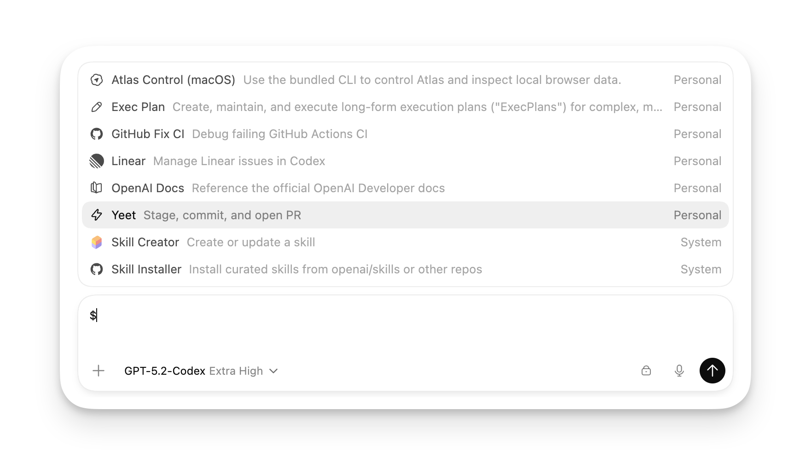

Codex CLI Skills
Skills（スキル）はCodex CLIの拡張メカニズムであり、カスタムワークフローや自動化タスクを作成できます。スキルを使用すると、特定のシナリオにおけるCodexの動作方法を定義できます。
スキルとは？
スキルは設定可能な動作パターンであり、Codexに特定の種類のタスクの処理方法を指示します。独自のスキルを作成して次のことができます：

- 一般的な開発タスクの自動化
- 特定分野の処理フローの定義
- コードレビューの基準のカスタマイズ
- プロジェクト固有のテンプレートとルールの作成
スキルシステムにより、Codexはさまざまなプロジェクトやワークフローのニーズに適応できます。まるでチームに専任の開発アシスタントを割り当てたかのようです。
スキルディレクトリ
Codexは以下の場所からスキルを読み込みます：
| 場所 | 説明 |
|---|---|
~/.codex/skills/ | グローバルスキルディレクトリ。すべてのプロジェクトで利用可能 |
{项目目录}/.codex/skills/ | プロジェクトレベルのスキルディレクトリ |
指定されたディレクトリを設定する | config.toml の skills.directory で指定 |
スキルディレクトリの設定
カスタムスキルディレクトリ
enabled = true
directory = "~/my-codex-skills"
スキルファイルの構造
各スキルは独立したフォルダであり、次のファイルを含みます：
skill-name/ ├── skill.md # 技能定义文件（必需） └── (可选的辅助文件)
skill.md ファイル形式
スキル定義の例
name: コードレビュー
description: 深いコードレビューを実行し、改善提案を提供します
trigger: /review
---
# コードレビュースキル
ユーザーがコードレビューを要求した場合、次の手順を実行します：
## レビュー基準
1. コードの可読性
2. パフォーマンスの問題
3. セキュリティ上のリスク
4. ベストプラクティスの順守状況
5. テストカバレッジ
## 出力形式
次の構造化レポートを提供します：
- 問題リスト（重大度順）
- 改善提案
- コードスコア（1-10）
スキルのメタデータ
各スキルファイルの先頭にはYAML形式のメタデータを含める必要があります：
| フィールド | 型 | 説明 | 必須 |
|---|---|---|---|
name | string | スキル名 | である |
description | string | スキルの説明 | である |
trigger | string | トリガーキーワード | 否 |
入力がスキルのtriggerに一致すると、Codexは自動的にそのスキルを使用してタスクを処理します。
カスタムスキルの作成
例として簡単なスキルを作成してみましょう：
ステップ1: スキルディレクトリの作成
スキルフォルダの作成
ステップ2: スキル定義の作成
skill.md の作成
name: テスト生成
description: コードの単体テストを生成します
trigger: テスト
---
# テスト生成スキル
ユーザーがテスト生成を要求した場合、次の手順を実行します：
## 手順
1. 既存コードの機能を分析する
2. テストが必要な境界条件を特定する
3. 適切なテストフレームワークを選択する
4. テストケースを生成する
## テスト基準
- カバレッジには通常ケース、境界ケース、エラーケースを含める必要があります
- 各テストケースは独立しており、他のテストの実行順序に依存しない必要があります
- 明確なテスト関数名を使用します
## 出力形式
直接実行可能なテストコードを生成し、必要なテストデータを含めます。
ステップ3: スキルの使用
これで、「テスト」を含む内容を入力すると、Codexは自動的にこのスキルを使用します：
スキルのトリガー
この関数のテストを生成してください
このモジュールをテストしてください
組み込みスキル
Codexには一般的なスキルがいくつか組み込まれています：
| スキル名 | トリガーワード | 説明 |
|---|---|---|
| コードレビュー | review、レビュー | コードレビューを実行し、改善提案を提供します |
| デバッグ | debug、デバッグ | 問題の特定と修正を支援します |
| リファクタリング | refactor、リファクタリング | 機能を変更せずにコード構造を最適化します |
| ドキュメント | doc、ドキュメント | コードドキュメントを生成します |
組み込みスキルの動作を上書きして、プロジェクトのニーズに合ったバージョンを作成できます。
スキルの優先順位
複数のスキルが一致する場合、Codexは次の優先順位で選択します：
- 完全一致（完全に一致するトリガーワード）
- 部分一致（入力がトリガーワードを含む）
- 意味的一致（AIが関連性を判断）
特定のスキルを強制的に使用
スラッシュコマンドで特定のスキルを強制使用できます：
スキルを強制使用
@skill-name タスクの説明
高度なスキル設定
条件付きトリガー
設定により、特定の条件下でスキルをトリガーできます：
条件付きトリガーの例
name: Pythonスキル
description: Pythonプロジェクト固有の処理
trigger: python
when:
file_pattern: "*.py"
directory: "src/"
---
# Pythonプロジェクトスキル
このスキルはPythonファイルを処理するときのみ有効です。
マルチステップタスク
スキルは複雑なマルチステップフローを定義できます：
マルチステップスキル
name: 完全な機能開発
description: 要件から実装までの完全なフロー
trigger: 機能開発
---
# 完全な機能開発フロー
## フェーズ1: 要件分析
- 機能要件を理解する
- 境界条件を特定する
- データ構造を設計する
## フェーズ2: 設計
- 関数/クラス構造を設計する
- インターフェースを定義する
- アルゴリズムを選択する
## フェーズ3: 実装
- コードを書く
- コメントを追加する
- ドキュメントを書く
## フェーズ4: テスト
- 単体テストを書く
- 境界条件を検証する
- カバレッジを確認する
## フェーズ5: コミット
- Gitコミットを作成する
- コミットメッセージを書く
スキルのベストプラクティス
命名規則
- 明確で説明的な名前を使用する
- 名前はスキルの機能を表すべきです
- 中国語の名前の使用を避ける（エンコーディングの問題が発生する可能性があります）
トリガーワードの選択
- 一般的なキーワードを選択する
- あまりにも広範なトリガーワードを避ける
- ユーザーの自然な表現方法を考慮する
スキルの粒度
- スキルの責務を単一に保つ
- 1つのスキルで1種類の問題を解決する
- 複雑なフローはスキルの組み合わせで実現できる
優れたスキルは、ユーザーに「Codex は私のニーズを理解している」と感じさせるべきであり、特別な構文を学ぶ必要があるべきではない。
スキルの管理
利用可能なスキルの一覧表示
スキルリストの表示
/skills
スキルの無効化
特定のスキルを使いたくない場合は、対応するファイルを削除するか、他のディレクトリに移動できます。
スキルの更新
スキルファイルを変更した後、反映するには Codex を再起動する必要があります。
スキルサンプルライブラリ
OpenAI 公式では、参考用と使用用のプリセットスキルをいくつか提供しています：
詳細な例については GitHub リポジトリを参照してください：https://github.com/openai/codex/tree/main/skills
よくある質問
Q: スキルがトリガーされません
スキルファイルのメタデータ形式が正しいか確認し、YAML ヘッダー形式が正しく、ファイルが.mdで終わっていることを確認してください。
Q: スキルをデバッグするには？
Codex で使用できる/debugコマンドでスキルマッチングの詳細情報を確認できます。
Q: スキルはCodexの通常の動作に影響しますか？
スキルは単にガイドラインを提供するだけで、Codex は依然として独立して判断します。スキルが適切に設定されていない場合、Codex はデフォルトの動作を使用します。
その他の拡張機能
クリックしてノートを共有
ノートはこの記事の内容を拡張したものである必要があります！
記事の投稿はこちらをクリック
登録招待コードの入手方法
ノートを共有する前にログインが必要です！
登録招待コードの入手方法